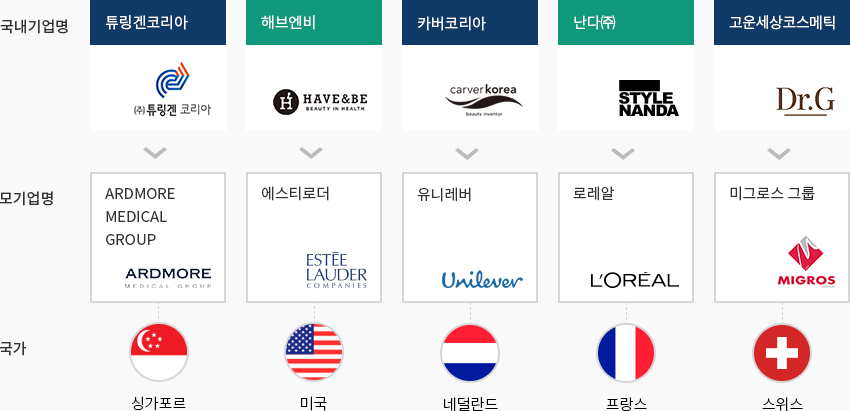
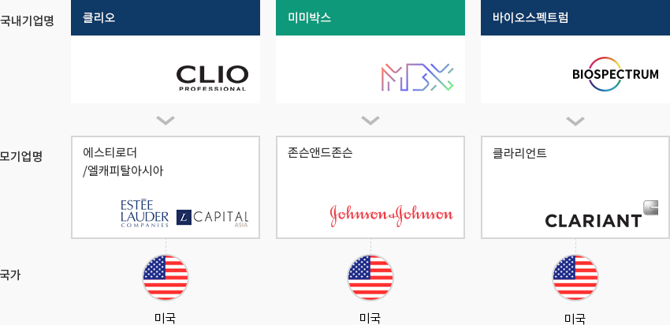
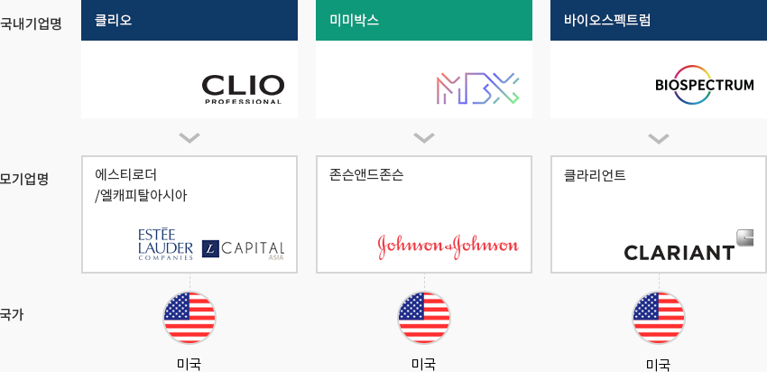
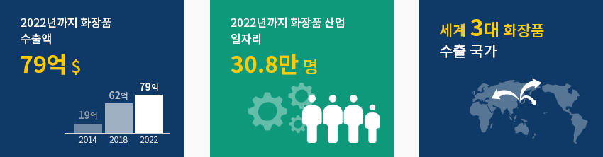
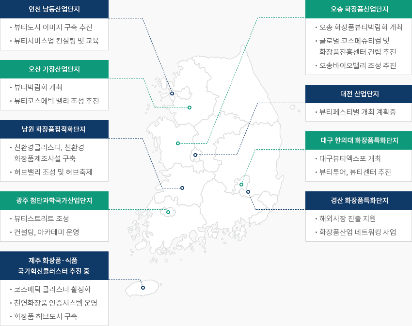

뷰티
- Home
- Why KOREA
- 산업
- 뷰티
뷰티
Beauty
-
글로벌 화장품 시장의 작은 거인, 한국 내용닫기글로벌 화장품 시장의 작은 거인, 한국2020년 기준 한국 화장품 시장은 약 126억 달러로 인도에 이어 세계에서 9번째로 큰 시장이며, 화장품 제조 기술을 보유하여
글로벌 화장품 시장에서 경쟁력을 확보하고 있다. 또한, 글로벌 브랜드 제품 개발의 테스트 베드(Test-Bed)역할을 하고 있다.특히 글로벌 시장에서 K-Beauty가 주류로 인정받기 시작하면서 한국 화장품에 대한 글로벌 수요가 빠르게 증가하고 있고,
COVID-19 상황 속에서도 수출은 꾸준히 증가하여 2020년에는 사상 처음으로 70억 달러 규모를 넘어섰으며,
연평균 성장률(’16~’20) 15.7%를 기록하며 세계 4대 화장품 수출국으로서의 위상을 지키고 있다."세계 국가별 화장품 수출 실적"(단위: 백만달러)세계 국가별 화장품 수출 실적표로 순위, 국가, 년도(2016,2017,2018,2019, 2020), CAGR (‘16-‘20) 정보 제공 순위 국가 2016년 2017년 2018년 2019년 2020년 CAGR
(‘15-‘19)1 프랑스 13,326 15,245 16,983 17,552 15,319 3.6% 2 미국 9,540 10,162 10,737 11,006 9,741 -0.2% 3 독일 8,301 8,691 9,684 9,472 8,221 -0.3% - 7
- 대한민국
- 4,224
- 4,997
- 6,308
- 6,571
- 7,602
- 15.8%
5 일본 2,719 3,703 5,252 5,868 6,790 15.8% 6 이탈리아 4,714 5,175 5,790 5,682 4,894 0.9% 7 중국 3,195 3,778 4,411 4,760 4,751 10.4% 8 홍콩 1,837 2,325 3,151 3,730 4,675 26.3% ※ 출처 : ITC(2020), 대한화장품산업연구원(2020)
※ 주석 : 국내 화장품 기준에 따라 분류/ 싱가포르는 중개무역 중심 실적으로 화장품 제조·수출국에서 제외 -
COVID-19에도 수출확대를 통한 성장세 유지 내용열기COVID-19에도 수출확대를 통한 성장세 유지한국 화장품 생산은 지속적인 수출 확대를 통해 내수 시장 성장 둔화와 COVID-19 유행으로 인한
시장 침체에 대응하면서 최근 5년간(’16~’20) 연평균 성장률 3.8%의 성장세를 기록했다.특히 화장품 수출은 K-뷰티 등의 한류 영향으로 높은 성장세를 기록하고 있으며,
최근 5년간(’16~’20) 화장품 수출액 연평균 증가율은 15.8%에 달한다.국내 화장품 생산실적 및 증감률 추이 표로 구분, 년도(2010 ~ 1019년) 정보제공 ※ 출처 : 식품의약품안전처
※ 업체수는 제조업체 중 생산실적을 보고한 업체만 포함 -
글로벌 기업들의 한국 브랜드 투자 지속 내용열기글로벌 기업들의 한국 브랜드 투자 지속해외 투자가들의 한국화장품 시장에 대한 관심이 지속되고 있다.2016년 글로벌 화장품 기업 유니레버가카버코리아(Carver Korea)를, 2018년에는 로레알이
스타일난다(Stylenanda)를 인수한 바 있다. 이를 전후하여 미그로스기업, 존슨앤드존슨, 클라리언트 등
글로벌 기업들의 투자 유치가 이어지고 있으며, 특히 고운세상코스메틱의 경우 코로나 상황에서도
매출이 성장하는 등 K뷰티의 저력을 보여주고 있다는 평가다."글로벌기업-한국기업 인수 사례"글로벌기업-한국기업 인수 사례 표로 국가, 모기업명, 국내기업명 정보제공 국가 모기업명 국내기업명 싱가포르 ARDMORE MEDICAL GROUP 튜링겐코리아 미국 에스티로더 해브엔비 네덜란드 유니레버 카버코리아 프랑스 로레알 난다㈜ 스위스 미그로스 그룹 고운세상코스메틱  "글로벌기업-한국기업 투자 사례"
"글로벌기업-한국기업 투자 사례"글로벌기업-한국기업 투자 사례 표로 국가, 모기업명, 국내기업명 정보제공 국가 모기업명 국내기업명 미국 에스티로더/엘캐피탈아시아 클리오 미국 존슨앤드존슨 미미박스 미국 클라리언트 바이오스펙트럼
-
미래 수출 주력산업으로 전환 내용열기미래 수출 주력산업으로 전환한국 정부는 화장품 산업을 미래 수출 주력 산업으로 집중 육성하고자 노력하고 있다.
2022년까지 화장품 3대 수출국으로의 도약 및 화장품 산업 일자리 30.8만 명을 달성하고,
특히 중화권에 집중되어 있는 수출지역 다변화를 모색하고 있다.
한국은 2020년 3월 세계 최초로 '맞춤형 화장품 판매 제도'를 실시하여 운영 중에 있으며,
엄격한 기준에 따라 맞춤형 화장품 관리자들을 배출하고, 개개인의 니즈에 맞는 다양한 제품들을 선보이는 기틀을 마련했다.뿐만 아니라, 한국인 및 신남방(동남아시아 및 인도) 국가 소비자들의 피부 특성을 파악하기 위해 소비자 설문,
피부 측정, 피부 유전체 분석, 피부 미생물 분석 등 다각도에서 연구를 진행하고 있으며, 이들 특성에 따른 제품 개발,
시장 진출 전략 마련을 통해 세계 시장 선점을 지원하고 있다. -
산업 육성을 위한 중앙정부 및 지자체의 적극적인 지원 내용열기산업 육성을 위한 중앙정부 및 지자체의 적극적인 지원한국 화장품 산업은 시장 및 유통 인프라가 집적된 수도권을 중심으로 산업 활동이 활발하게
전개되고 있으며, 전체 사업체 수의 57.9%, 종사자 수의 57.1%가 해당 지역에 입지하고 있다.또한 경상북도(경산시), 충청북도(오송) 등에 지역별 클러스터가 구축되어 한국 화장품 산업 발전의
토대가 되고 있으며, 민·관 협의체 운영을 통해 오산 가장산업단지, 화성 향남산업단지, 인천 남동공단,
충북 오송·오창산업단지 등에 "K-뷰티클러스터"를 구축을 지속적으로 추진하고 있다.정부는 화장품 생산, 신기술 연구개발, 뷰티서비스를 포함한 전문교육, 중소기업 홍보(컨설팅) 등이
한 곳에서 이루어질 수 있는 K-뷰티 클러스터를 구축하여 K-뷰티 산업육성을 위한 대표 거점을 마련할 계획이다."한국 화장품 산업 지역별 클러스터 지원 현황"-
인천 남동산업단지
- 뷰티도시 이미지 구축 추진
- 뷰티서비스업 컨설팅 및 교육
-
오송 화장품산업단지
- 오송 화장품뷰티박람회 개최
- 글로벌 코스메슈티컬 및 화장품진흥센터 건립 추진
- 오송바이오밸리 조성 추진
-
오산 가장산업단지
- 뷰티박람회 개최
- 뷰티코스메틱 밸리 조성 추진
-
대전 산업단지
- 뷰티페스티벌 개최 계획중
-
남원 화장품집적화단지
- 친환경클러스터, 친환경 화장품제조시설 구축
- 허브밸리 조성 및 허브축제
-
대구 한의대 화장품특화단지
- 대구뷰티엑스포 개최
- 뷰티투어, 뷰티센터 추진
-
광주 첨단과학국가산업단지
- 뷰티스트리트 조성
- 컨설팅, 아카데미 운영
-
경산 화장품특화단지
- 해외시장 진출 지원
- 화장품산업 네트워킹 사업
-
제주 화장품·식품 국가혁신클러스터 추진 중
- 코스메틱 클러스터 활성화
- 천연화장품 인증시스템 운영
- 화장품 허브도시 구축
※ 출처 : 미래 화장품 육성방안(보건복지부, 2019.5) -
인천 남동산업단지


Invest KOREA담당자
식품/패션/뷰티 PM
정보영
기간산업유치팀
T.+82-2-3460-7888
입지정보 추천
산업단지 정보
[경기도 오산시] 가장2일반산업단지
세부정보 바로가기를 클릭하시면 산업단지공단의 Smart K-Factory 서비스의 해당 정보 화면으로 이동합니다.
-
단지명가장2일반산업단지
-
최초지정일2008.05.14
-
지정면적(km2)595,431
-
관리기관경기도 오산시
-
인근철도역오산역
-
역과 거리(km)4
-
인근공항김포국제공항
-
공항과의 거리(km)61
-
공업용수 공급용량(톤/일)3595(㎥/일)
-
소속 기초 지자체경기도 오산시
-
인구수(명)228,768
산업단지 정보
[광주광역시 북구] 광주첨단과학산업단지
세부정보 바로가기를 클릭하시면 산업단지공단의 Smart K-Factory 서비스의 해당 정보 화면으로 이동합니다.
-
단지명광주첨단과학산업단지
-
최초지정일1990.07.21
-
지정면적(km2)9,991,652
-
관리기관한국산업단지공단
-
인근철도역광주역
-
역과 거리(km)14
-
인근공항광주공항
-
공항과의 거리(km)15
-
공업용수 공급용량(톤/일)17177(㎥/일)
-
소속 기초 지자체광주광역시 북구
-
인구수(명)1,454,154
산업단지 정보
[인천광역시 남동구] 남동국가산업단지(재생사업지구)
세부정보 바로가기를 클릭하시면 산업단지공단의 Smart K-Factory 서비스의 해당 정보 화면으로 이동합니다.
-
단지명남동국가산업단지(재생사업지구)
-
최초지정일1980.09.02
-
지정면적(km2)9,504,046
-
관리기관한국산업단지공단
-
인근철도역부평역
-
역과 거리(km)9
-
인근공항인천공항
-
공항과의 거리(km)32
-
공업용수 공급용량(톤/일)49081(㎥/일)
-
소속 기초 지자체인천광역시 남동구
-
인구수(명)2,943,491
산업단지 정보
[충청북도 청주시] 오송제2생명과학단지(충북경제자유구역)
세부정보 바로가기를 클릭하시면 산업단지공단의 Smart K-Factory 서비스의 해당 정보 화면으로 이동합니다.
-
단지명오송제2생명과학단지(충북경제자유구역)
-
최초지정일2010.10.15
-
지정면적(km2)3,283,845
-
관리기관한국산업단지공단
-
인근철도역오송역
-
역과 거리(km)3
-
인근공항청주국제공항
-
공항과의 거리(km)24
-
공업용수 공급용량(톤/일)7,685(㎥/일)
-
소속 기초 지자체충청북도 청주시
-
인구수(명)843,782
산업단지 정보
[제주특별자치도 제주시] 용암해수일반산업단지
세부정보 바로가기를 클릭하시면 산업단지공단의 Smart K-Factory 서비스의 해당 정보 화면으로 이동합니다.
-
단지명용암해수일반산업단지
-
최초지정일2009.12.09
-
지정면적(km2)197,341
-
관리기관제주특별자치도 제주시
-
인근철도역-
-
역과 거리(km)-
-
인근공항제주국제공항
-
공항과의 거리(km)33
-
공업용수 공급용량(톤/일)1970(㎥/일)
-
소속 기초 지자체제주특별자치도 제주시
-
인구수(명)491,184
산업단지 정보
[강원도 강릉시] 강릉과학일반산업단지
세부정보 바로가기를 클릭하시면 산업단지공단의 Smart K-Factory 서비스의 해당 정보 화면으로 이동합니다.
-
단지명강릉과학일반산업단지
-
최초지정일1993.12.15
-
지정면적(km2)1,486,850
-
관리기관강원도 강릉시
-
인근철도역강릉역
-
역과 거리(km)9
-
인근공항양양국제공항
-
공항과의 거리(km)40
-
공업용수 공급용량(톤/일)4,939(㎥/일)
-
소속 기초 지자체강원도 강릉시
-
인구수(명)212,935